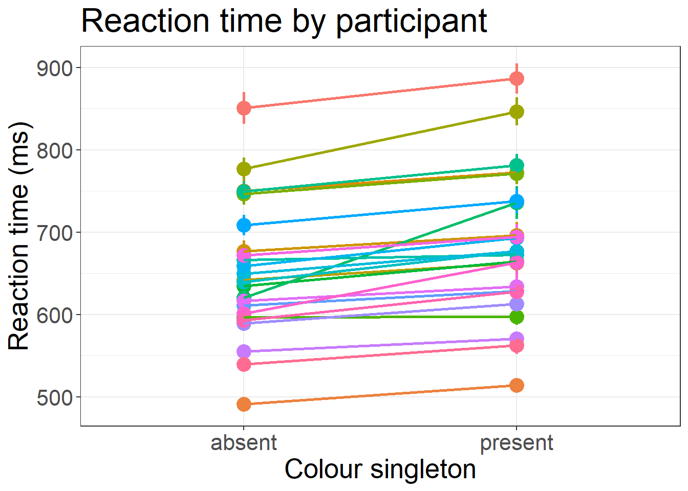
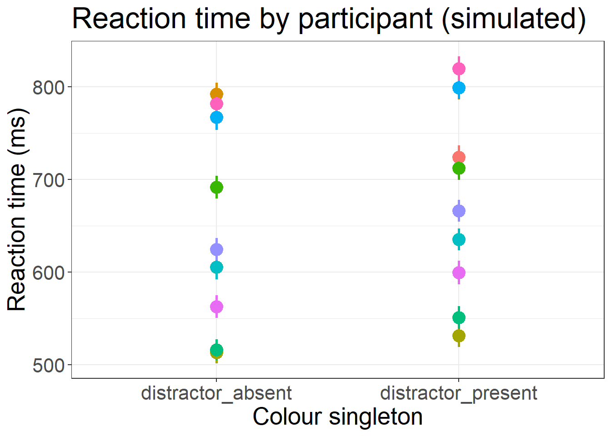
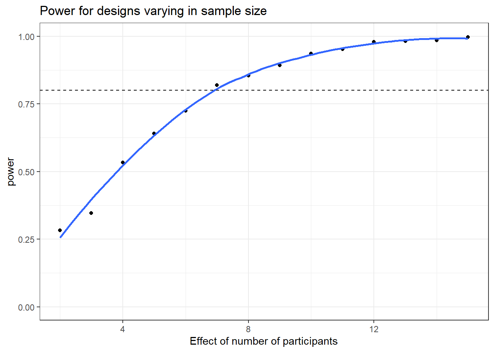

library(tidyverse) # Data wrangling, plotting and general awesomeness
library(lmerTest) # Mixed modeling using lme4 with better support for tests
library(broom.mixed) # To make pretty tables
library(knitr) # To print those pretty tablesPower Simulation in a Mixed Effects design using R
UPDATE: Python version available here
In this notebook we’ll go through a quick example of setting up a power analysis, using data from an existing, highly-powered study to make credible parameter estimates. The code for setting up a simulation is inspired by/shamelessly stolen from a great tutorial about this topic by Lisa DeBruine and her appendix on its application for sensitivity analysis
Before we do anything, let’s import all the packages we will need:
In this example, we will make an estimate of the number of participants we need to replicate a simple and well-established experimental finding: The capture of attention by a colour singleton during visual search for a unique shape singleton. For this example, we are fortunate in that there are many studies of this effect for us to base our parameter estimates on. One recent example is a highly-powered study from the Serences lab purpose-built to be used for sensitivity analysis. First let’s import the data for our specific case from the Adam et al. (2021) study, which is freely available in an OSF repository, and look at the data.
Note that when previous data doesn’t exist (or even if it does, but you don’t trust that it’s sufficient to base your effect estimates on) there are alternative ways of determining such parameters, including formally determining a smallest effect size of interest.
The data we chose is from experiment 1c: variable colour singleton search. We are interested in the raw trial data, not the summary data (We are doing a mixed model after all, not an ANOVA) so we have to grab all the raw files and concatenate them.
df <- list.files(
path = "./Experiment_1c",
full.names = T) %>%
lapply(
read_csv,
col_types = cols(
gender = "c",
set_size = "f"
)
) %>%
bind_rowsOnce it’s imported, we can take a look at our data, e.g., looking at subject means between the two conditions:
df %>%
filter(acc == 1,
set_size == 4) %>%
mutate( rt = rt*1000) %>%
ggplot(
aes(
x=distractor,
y=rt,
color=as.factor(subject),
group=as.factor(subject)
)) +
guides(color = "none") +
stat_summary(
fun.data = "mean_se",
size=1
) +
theme_bw()+
ggtitle("Reaction time by participant")+
xlab("Colour singleton")+
ylab("Reaction time (ms)")+
theme(text=element_text(size=20))
We can clearly see typical atttentional capture effects in the data. Now that we have the data, let’s model it:
d <- df %>%
filter(acc == 1,
set_size == 4) %>%
mutate( rt = rt*1000)
# Our model is simple: RT is dependent on distractor presence, with a random slope and intercept for each subject. More complex models are left as an exercise to the reader.
m1 <- lmer(rt ~ distractor + ( distractor | subject), data = d)
kable(tidy(m1))| effect | group | term | estimate | std.error | statistic | df | p.value |
|---|---|---|---|---|---|---|---|
| fixed | NA | (Intercept) | 651.5000492 | 16.66271 | 39.099285 | 22.99885 | 0.0e+00 |
| fixed | NA | distractorpresent | 30.8566430 | 4.75268 | 6.492473 | 22.90957 | 1.3e-06 |
| ran_pars | subject | sd__(Intercept) | 80.6315541 | NA | NA | NA | NA |
| ran_pars | subject | cor__(Intercept).distractorpresent | 0.3498972 | NA | NA | NA | NA |
| ran_pars | subject | sd__distractorpresent | 14.7695907 | NA | NA | NA | NA |
| ran_pars | Residual | sd__Observation | 175.8140465 | NA | NA | NA | NA |
The above model rt ~ distractor + ( distractor | subject) is our putative data generating process, the parameters that we believe underly the generation of observed dependent variables, and the relationship between those parameters. The table shown above gives us parameter estimates for all fixed and random effects in the model. Now let’s plug those parameters into a simulation!
n_subj = 10 # number of subjects
n_present = 200 # number of distractor present trials
n_absent = 200 # number of distractor absent
beta_0 = 650 # grand mean
beta_1 = 30 # effect of category
tau_0 = 80 # by-subject random intercept sd
tau_1 = 15 # by-subject random slope sd
rho = 0.35 # correlation between intercept and slope
sigma = 175 # residual noseGenerate trials with their fixed effects:
# simulate a sample of items
# total number of items = n_ingroup + n_outgroup
items <- data.frame(
item_id = seq_len(n_present + n_absent),
category = rep(c("distractor_present", "distractor_absent"), c(n_present, n_absent))
)
# effect-code category
items$X_i <- recode(items$category, "distractor_absent" = -0.5, "distractor_present" = +0.5)
# taking a peek at the items dataframe without changing it
items %>%
group_by(category) %>%
summarise(trial_count = n(), X_i = mean(X_i)) %>%
kable(.)| category | trial_count | X_i |
|---|---|---|
| distractor_absent | 200 | -0.5 |
| distractor_present | 200 | 0.5 |
And generate participants with their random intercepts and slopes:
# simulate a sample of subjects
# calculate random intercept / random slope covariance
covar <- rho * tau_0 * tau_1
# put values into variance-covariance matrix
cov_mx <- matrix(
c(tau_0^2, covar,
covar, tau_1^2),
nrow = 2, byrow = TRUE)
# generate the by-subject random effects
subject_rfx <- MASS::mvrnorm(n = n_subj,
mu = c(T_0s = 0, T_1s = 0),
Sigma = cov_mx)
# combine with subject IDs
subjects <- data.frame(subj_id = seq_len(n_subj),
subject_rfx)
kable(head(subjects))| subj_id | T_0s | T_1s |
|---|---|---|
| 1 | 19.397526 | 0.6981572 |
| 2 | 7.194610 | 13.3415659 |
| 3 | 20.588225 | 6.6384248 |
| 4 | -2.435126 | -4.6639812 |
| 5 | 4.181630 | 9.4626016 |
| 6 | 2.965948 | -7.6438143 |
Now combine and add residual noise to create a complete dataframe:
# cross subject and item IDs; add an error term
# nrow(.) is the number of rows in the table
trials <- crossing(subjects, items) %>%
mutate(e_si = rnorm(nrow(.), mean = 0, sd = sigma)) %>%
select(subj_id, item_id, category, X_i, everything())
# calculate the response variable
dat_sim <- trials %>%
mutate(RT = beta_0 + T_0s + (beta_1 + T_1s) * X_i + e_si) %>%
select(subj_id, item_id, category, X_i, RT)
kable(head(dat_sim))| subj_id | item_id | category | X_i | RT |
|---|---|---|---|---|
| 1 | 1 | distractor_present | 0.5 | 798.7024 |
| 1 | 2 | distractor_present | 0.5 | 517.1310 |
| 1 | 3 | distractor_present | 0.5 | 827.5971 |
| 1 | 4 | distractor_present | 0.5 | 788.1649 |
| 1 | 5 | distractor_present | 0.5 | 829.7890 |
| 1 | 6 | distractor_present | 0.5 | 757.6179 |
Data generated! Does it look like we’d expect?
dat_sim %>%
ggplot(
aes(
x=category,
y=RT,
color=as.factor(subj_id),
group=as.factor(subj_id)
)) +
guides(color = "none") +
stat_summary(
fun.data = "mean_se",
size=1
) +
theme_bw()+
ggtitle("Reaction time by participant (simulated)")+
xlab("Colour singleton")+
ylab("Reaction time (ms)")+
theme(text=element_text(size=20))
Looks comparable to the original data! Now let’s fit a model to see if we recover the parameters:
m_sim <- lmer(RT ~ category + (category | subj_id), dat_sim)
kable(tidy(m_sim))| effect | group | term | estimate | std.error | statistic | df | p.value |
|---|---|---|---|---|---|---|---|
| fixed | NA | (Intercept) | 630.2876513 | 10.157614 | 62.050761 | 9.000682 | 0.0000000 |
| fixed | NA | categorydistractor_present | 32.9581130 | 7.240272 | 4.552054 | 9.000076 | 0.0013818 |
| ran_pars | subj_id | sd__(Intercept) | 29.7220543 | NA | NA | NA | NA |
| ran_pars | subj_id | cor__(Intercept).categorydistractor_present | -0.0656712 | NA | NA | NA | NA |
| ran_pars | subj_id | sd__categorydistractor_present | 15.0822466 | NA | NA | NA | NA |
| ran_pars | Residual | sd__Observation | 172.2617884 | NA | NA | NA | NA |
Great, our simulation works - our fixed effect parameter estimates are close to the originals, and statistically significant! Now for a power analysis, we’d put the above in functions and run the code many times for a given combination of parameters. See below:
my_sim_data <- function(
n_subj = 5, # number of subjects
n_present = 200, # number of distractor present trials
n_absent = 200, # number of distractor absent
beta_0 = 650, # grand mean
beta_1 = 30, # effect of category
tau_0 = 80, # by-subject random intercept sd
tau_1 = 15, # by-subject random slope sd
rho = 0.35, # correlation between intercept and slope
sigma = 175
)
{
# simulate a sample of items
# total number of items = n_ingroup + n_outgroup
items <- data.frame(
item_id = seq_len(n_present + n_absent),
category = rep(c("distractor_present", "distractor_absent"), c(n_present, n_absent))
)
# effect-code category
items$X_i <- recode(items$category, "distractor_absent" = -0.5, "distractor_present" = +0.5)
# simulate a sample of subjects
# calculate random intercept / random slope covariance
covar <- rho * tau_0 * tau_1
# put values into variance-covariance matrix
cov_mx <- matrix(
c(tau_0^2, covar,
covar, tau_1^2),
nrow = 2, byrow = TRUE)
# generate the by-subject random effects
subject_rfx <- MASS::mvrnorm(n = n_subj,
mu = c(T_0s = 0, T_1s = 0),
Sigma = cov_mx)
# combine with subject IDs
subjects <- data.frame(subj_id = seq_len(n_subj),
subject_rfx)
# cross subject and item IDs; add an error term
# nrow(.) is the number of rows in the table
trials <- crossing(subjects, items) %>%
mutate(e_si = rnorm(nrow(.), mean = 0, sd = sigma)) %>%
select(subj_id, item_id, category, X_i, everything())
# calculate the response variable
dat_sim <- trials %>%
mutate(RT = beta_0 + T_0s + (beta_1 + T_1s) * X_i + e_si) %>%
select(subj_id, item_id, category, X_i, RT)
}The above function simulates data. The function below combines it with a model fit so we have a function that can be repeatedly called during our power analysis.
single_run <- function(filename = NULL, ...) {
# ... is a shortcut that forwards any arguments to my_sim_data()
dat_sim <- my_sim_data(...)
# run lmer and capture any warnings
ww <- ""
suppressMessages(suppressWarnings(
mod_sim <- withCallingHandlers({
lmer(RT ~ X_i + (1 + X_i | subj_id),
dat_sim, REML = FALSE)},
warning = function(w) { ww <<- w$message }
)
))
# get results table and add rep number and any warnings
sim_results <- broom.mixed::tidy(mod_sim) %>%
mutate(warnings = ww)
# add columns for the specified parameters
params <- list(...)
for (name in names(params)) {
sim_results[name] <- params[name]
}
# append the results to a file if filename is set
if (!is.null(filename)) {
append <- file.exists(filename) # append if the file exists
write_csv(sim_results, filename, append = append)
}
sim_results
}Now let’s run our sensitivity analysis - we will run our simulation 1000 times for each combination of parameters, and record how often the fixed effect estimates reach significance:
nreps <- 1000
params <- crossing(
rep = 1:nreps, # number of runs
n_subj = 10, # number of subjects
n_present = 150, # number of distractor present trials
n_absent = 150, # number of distractor absent
beta_0 = 650, # grand mean
beta_1 = 30, # effect of category
tau_0 = 80, # by-subject random intercept sd
tau_1 = 15, # by-subject random slope sd
rho = 0.35, # correlation between intercept and slope
sigma = 175 # residual (standard deviation)
) %>%
select(-rep)
sims <- purrr::pmap_df(params,single_run,filename=NULL)
# calculate mean estimates and power for specified alpha
alpha <- 0.05
sims %>%
filter(effect == "fixed") %>%
group_by(term) %>%
summarize(
mean_estimate = mean(estimate),
mean_se = mean(std.error),
power = mean(p.value < alpha),
.groups = "drop"
)# A tibble: 2 x 4
term mean_estimate mean_se power
<chr> <dbl> <dbl> <dbl>
1 (Intercept) 651. 23.4 1
2 X_i 29.7 7.75 0.937If we want to run our sensitivity analysis across a given parameter space, we’ll have to map the function single_run to generate data across this space, for example, over a varying number of participants:
filename1 <- "sens1.csv"
nreps <- 1000 # number of replications per parameter combo
params <- crossing(
rep = 1:nreps, # repeats each combo nreps times
n_subj = seq(2, 15), # number of subjects
n_present = 150, # number of distractor present trials
n_absent = 150, # number of distractor absent
beta_0 = 650, # grand mean
beta_1 = 30, # effect of category
tau_0 = 80, # by-subject random intercept sd
tau_1 = 15, # by-subject random slope sd
rho = 0.35, # correlation between intercept and slope
sigma = 175 # residual (standard deviation)
) %>%
select(-rep)
if (!file.exists(filename1)) {
# run a simulation for each row of params
# and save to a file on each rep
sims1 <- purrr::pmap_df(params, single_run, filename = filename1)
}Note that the above could obviously also be run over other dimensions of our parameter space, e.g. for different estimates of the fixed effects, amount of noise, number of trials, etc. etc., by changing the params list. How did we do? Let’s take a look at our power curve.
# read saved simulation data
# NB: col_types is set for warnings in case
# the first 1000 rows don't have any
ct <- cols(warnings = col_character(),
# makes sure plots display in this order
group = col_factor(ordered = TRUE),
term = col_factor(ordered = TRUE))
sims1 <- read_csv(filename1, col_types = ct)
power1 <- sims1 %>%
filter(effect == "fixed", term == "X_i") %>%
group_by(n_subj) %>%
summarise(
mean_estimate = mean(estimate),
mean_se = mean(std.error),
power = mean(p.value < alpha),
.groups = "drop"
)
power1 %>%
ggplot(aes(n_subj, power)) +
geom_point() +
geom_smooth(se = FALSE) +
ylim(0, 1) +
geom_hline(yintercept=0.8,linetype="dashed")+
scale_x_continuous(name = "Effect of number of participants") +
ggtitle("Power for designs varying in sample size") +
theme_bw()
Our power analysis has determined that, with the parameters established above, we need ~8 or more participants to reliably detect an effect!
The code used above is specific to power analysis for mixed models, but the approach generalises to other methods too, of course! The above code can easily be wrangled to handle different model types (simply change the model definition in single_run and make sure to capture the right parameters), and even Bayesian approaches. (For a thorough example of doing power analysis with Bayesian methods and the awesome bayesian regression package brms, see this blog post).
Even if the above code is spaghetti to you (~I was originally planning on also converting it to python/matlab, but there are only so many hours in the day~click here for a python version), I hope you will take away a few things from this tutorial:
- Power analysis is nothing more than testing whether we can recover the parameters of a hypothesised data-generating process reliably using our statistical test of choice.
- We can determine the parameters for such a data-generating process in the same way we formulate hypotheses (and indeed, in some ways these two things are one and the same): we use our knowledge, intuition, and previous work to inform our decision-making.
- If you have a hypothetical data-generating process, you can simulate data by simply formalising that process as code and letting it simulate a dataset
- Simulation can help you answer questions about your statistical approach that are difficult to answer with other tools